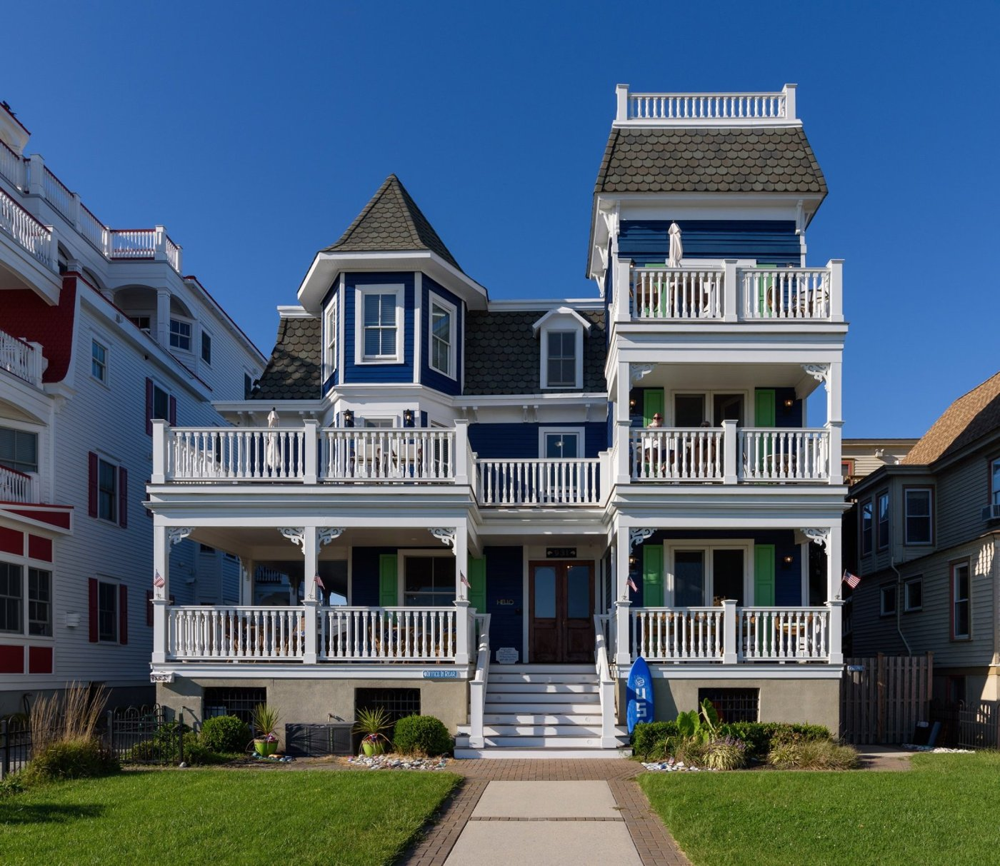
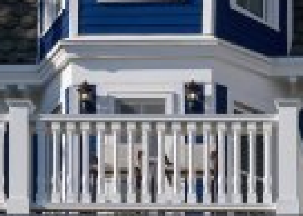
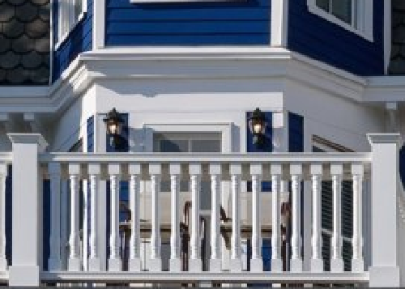
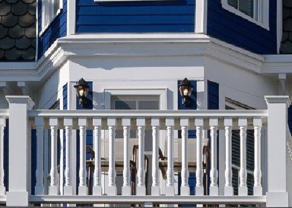
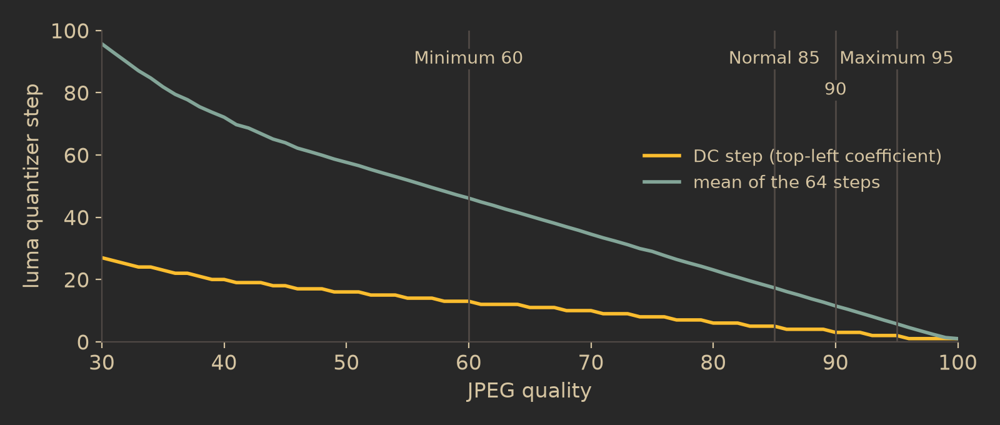
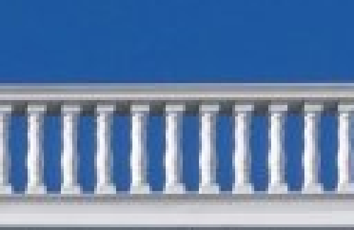
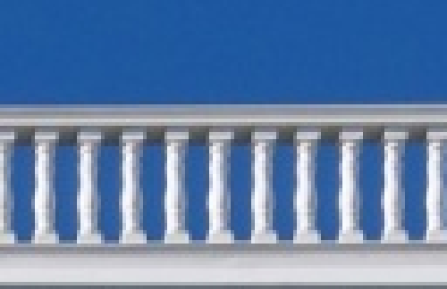
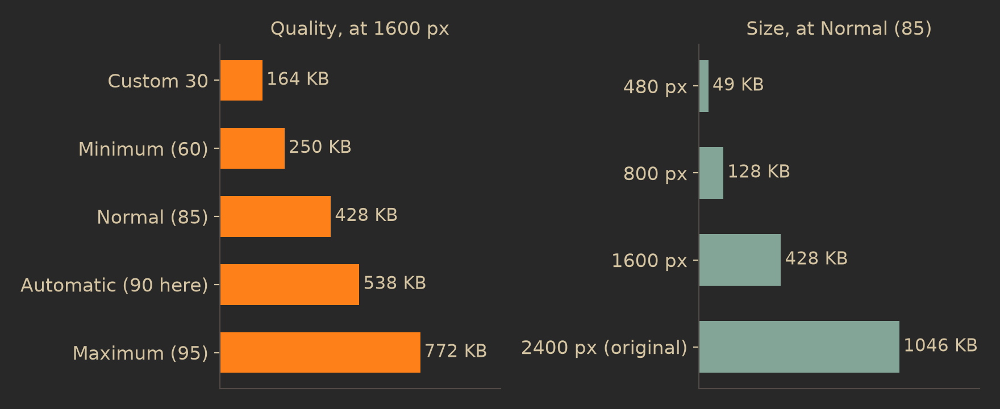
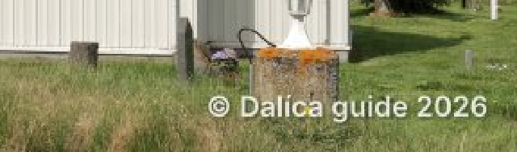

Export
How Dalíca turns your edited photos into new files for sharing: the order the pixels are rendered, resized and stamped in, what the quality presets really set, what metadata the copies carry, and why an export folder never holds a half-written file.
One pipeline for every new file
Export does not have a renderer of its own. Every new file Dalíca makes from a photo's pixels (Save, Save a Copy, Save As and Export) goes through one function, the output pipeline in dalica-create. The window, the command line and the MCP server all call the same code, so an export made from a script is byte for byte the export the dialog makes. The pipeline is pure: bytes in, bytes out, nothing written to disk. Writing is a separate step.
The render: your current edits, at full size
An export renders each photo's current recipe, the list of edits the library holds for it. Edits you have not saved into the file are exported too; nothing has to be saved first, and the original file is never changed. For each photo:
- Read the source file (at most 1 GiB) under the same decode limits as everywhere else: the header and its declared size first, then the pixels, inside the decoder's panic guard. A file that cannot be read as a picture is skipped with its reason and the export goes on.
- Convert to 8-bit sRGB through the color stage, whatever the source was (16-bit, grayscale, CMYK, any ICC profile). The one exception is a 16-bit PNG export (a source with transparency) without a profile, whose recipe only rotates or flips and which is neither resized nor watermarked: its samples are moved pixel for pixel at their own precision.
- Render the recipe at the full resolution of the source, with the file's EXIF orientation applied. This is the same CPU renderer that Save uses, so an export and a save of the same recipe have the same pixels before resizing.
Rotations
Rotations from the library (the rotate buttons, or a rotation chosen in the import tab) are entries in the recipe, and the camera's orientation tag is applied when the pixels are read, so the exported pixels are always upright and the file says Orientation 1. A viewer that ignores EXIF orientation still shows the export the right way up. In the sample run below, a portrait photo of 1684 × 2400 pixels turned a quarter turn clockwise exported at 480 × 337.
Why render at full size and then shrink: many edits have a radius or a neighborhood (sharpening, soft focus, vignettes, retouching). Rendering them at the source's resolution means the export looks like the edit view, only smaller. All of Dalíca's edit parameters are resolution independent, so the result does not depend on the export size you pick.
Resizing
"Resize to" sets the long side of the picture in pixels, after any crop and rotation. The other side follows from the aspect ratio, rounded to the nearest pixel. The slider runs from 100 to 4000 with stops at 480, 640, 800, 1024, 1280, 1600 (the default), 2048 and 3840, and the field accepts any whole number in that range.
- Never enlarged. A picture whose long side is already at or under the size you ask for is exported at its own size. This also holds after a crop has made a picture smaller than the target.
- "Use original size" exports the rendered size, which is the crop's size when there is one.
The scaling itself is an exact area average: each output pixel is the mean of the block of source pixels it covers, with partial pixels at the block's edges weighted by how much of them it covers. It runs as two separable passes (horizontal, then vertical) in integer arithmetic, rounding once at the end.
The trade-off is that an area average is slightly softer than a windowed-sinc filter would be at the same size: it does not sharpen while it shrinks. In exchange it cannot produce halos around the white railings and dark rooflines of a picture like the one below, and the same export made on two different machines is identical.


800 px (128 KB)
1600 px (428 KB)
2400 px, original (1046 KB)Quality presets and their JPEG settings
Exports are JPEG, except a source with real transparency (an alpha value below fully opaque somewhere), which becomes a PNG so the transparency survives. For JPEG, the "Image quality" choice sets one number, the quality on the usual 1 to 100 scale:
| Preset | Quality | What it is for |
|---|---|---|
| Automatic (default) | the source's own, else 90 | keeps the original's quality |
| Normal | 85 | balances quality and size |
| Maximum | 95 | keeps fine detail; large files |
| Minimum | 60 | small files with some quality loss |
| Custom | 1 to 100 | your own number |
How Automatic finds the source's quality
A JPEG does not record its quality setting, but it does carry the quantization tables it was compressed with. Most encoders make those tables by scaling the two example tables of the JPEG standard (ITU-T T.81 Annex K) with the same quality curve, so Dalíca reads the tables the frame header actually uses and finds the quality whose scaled tables match them best. For a file made that way the answer is exact; for a camera's own tables it is the closest fit. The chroma subsampling is read from the same header. A source that is not a JPEG, or whose header gives no estimate, gets 90.
The test picture is a quality 90 JPEG with 4:2:0 chroma. Its Automatic export carried exactly the source's luma table (first row 3 2 2 3 5 8 10 12), while Normal wrote 5 3 3 5 7 12 15 18, Minimum 13 9 8 13 19 32 41 49 and Maximum 2 1 1 2 2 4 5 6.
What the encoder writes
Dalíca's JPEG encoder is its own, written in Rust: baseline (sequential) JPEG, readable by every decoder.
- Quantization: the Annex K example tables, scaled by the quality: the scale is 5000/q below quality 50 and 200 − 2q from 50 up, each step is (table value × scale + 50) / 100, kept between 1 and 255. Higher quality means smaller steps and more of each frequency kept.
- Huffman coding: the Annex K example tables (not optimized per image).
- Chroma subsampling: the source's, when it is a JPEG (4:2:0 stays 4:2:0, anything else becomes 4:4:4), at every preset, not only Automatic; 4:4:4 for every other source. A grayscale source whose edits leave every pixel neutral is written as a one-channel grayscale JPEG.
- Threads: the image is cut into bands of whole MCU rows separated by restart markers, so bands can be coded on separate threads (up to 8). The band layout depends only on the image size, so the bytes are the same whatever the thread count.
- Color: the output is sRGB. An sRGB ICC profile is embedded only when the source had a profile; a source without one stays untagged, which viewers read as sRGB by convention.


Normal (85)
Maximum (95)
File names and numbering
Each export makes a new folder inside the export location (by default Pictures/Dalica/Exports). Its name is the one in the dialog, through the same sanitizer as every name Dalíca makes; when that name is already taken, the folder becomes <name>-001, <name>-002 and so on. An export never adds files to an older export's folder. The first photo to run makes the folder and writes a small .dalica.json into it that marks it as an export:
{
"dalica": { "version": 1 },
"folder": { "project": "exported" }
}That mark is how the folder appears in the library's Exported group, and because it lives in the folder, a library rebuild still finds it. If the export location is not inside a watched folder, the new folder is added as one (Scan Always) when the job ends.
Inside the folder, each picture keeps its own name's stem, sanitized (or Photo when nothing is left of it), with .jpg (or .png). "Add numbers to file names to keep the order" puts 001-, 002-, ... in front, in the order of the tray or the section; from 1,000 pictures on, four digits are used, so the names always sort in that order. The real run for this guide gave:
numbered/ first export, numbers on
001-DSC_1251.jpg
002-DSC_0884.jpg
003-DSC_4141.jpg
numbered-001/ second export with the same folder name
DSC_0884.jpg
DSC_1251.jpgNaming collisions
Two photos from different folders may share a stem (two IMG_0001.JPG from two cameras). Names are never decided ahead and then forced: each file is written to a temporary name and then given its own name by a step that never replaces an existing file. If the name is taken, the next one is tried: beach.jpg, then beach-001.jpg, beach-002.jpg. So two photos exported at the same moment on the two export threads can never overwrite each other.
The watermark
The watermark is drawn on the final pixels, after resizing and before encoding. It is plain text, always in the bottom-right corner, white with a soft shadow, set in Inter SemiBold (the interface's typeface, built into the program).
- Size: the text's line height (ascent to descent) is 3 % of the picture's long side: 48 px on a 1600 px export, 19 px on a 640 px one.
- Position: its right and bottom edges sit 2.5 % of the long side in from the picture's edges (at most a quarter of that side, so a very narrow picture still has room).
- Fit: text too wide for the picture minus its margins is shrunk until it fits exactly. Text that would have to shrink below 2 px is not drawn at all.
- Look: the text is 85 % opaque, so a little of the photo shows through and it reads as white even on dark areas. Its shadow is 55 % opaque at its densest, offset down and to the right by 5 % of the line height (at least one pixel) and blurred by two box passes of 4 % of the line height each.
- Text cleaning: tabs and line breaks become spaces; control characters, direction overrides, zero-width characters and variation selectors are removed (they would draw nothing, or reorder the text); the result is trimmed and cut at 200 characters.

640 px exportMetadata in exported copies
An exported file takes the source's metadata, adjusted to its new pixels, and then everything the library knows about the photo on top:
- EXIF
- The source's block, edited in place so camera maker notes keep their offsets: Orientation set to 1 (the pixels are already upright), the new pixel size, the sRGB color space. The embedded EXIF thumbnail is dropped in exports (Save writes a fresh 160 px one; an export has no use for it). A source without EXIF gets a small block holding just those facts.
- XMP
- The source's packet with
tiff:Orientation1 and the new size where it states them, every other property kept byte for byte. A JPEG also takes an extended XMP packet unchanged; a PNG has no place for one. - IPTC
- Kept, as Photoshop resources (APP13) in a JPEG and as a "Raw profile type iptc" text chunk in a PNG.
- From the library
- The caption, the tags, the star (also written as a rating) and a date you set by hand are merged in, so the export reads back the way the library shows the photo. The place is not rewritten: it stays as the file has it.
After writing, the result is read back and checked: it must parse cleanly, say Orientation 1 and the new size in both EXIF and XMP, and hold no GPS data when the location was removed.
Removing the location
Options → Export → "Remove location from exported photos" takes out the EXIF GPS block and every exif:GPS* property of the XMP. If the extended XMP packet holds GPS too, it is left out entirely. Place names (city, country, the IPTC location fields) are kept, because they are text you can see and edit, not coordinates; if you do not want those shared either, remove them from the photo first.
Formats without readable metadata: for sources whose metadata Dalíca does not read (GIF, BMP, HEIF, JPEG XL, PSD and the raw formats that are not TIFF based), the export holds only the facts above and the library's fields; nothing of the original's own metadata can be carried.
Videos in an export
When the photos being exported include videos, "Export videos as" decides what happens to them:
- First frame (default)
- The clip's poster frame (the frame its thumbnail shows, see the Video chapter) is decoded no larger than the export's long side, held losslessly in memory, and then sent through the same pipeline as a photo: the clip's rotations, the size, the quality, the watermark, and its caption, tags, star and date. It is written as
<clip>.jpg. A clip whose codec this build cannot decode has no poster frame; it is skipped and counted with the reason, for example "This video can't be played (ProRes)". An export of such clips alone does not start. - Full video (no resizing)
- Every clip is copied exactly as it is, never re-encoded and never resized, under the export's name with its own extension (
003-IMG_0042.MOVwith numbers on). The copy streams through a temporary file, is synced and compared byte for byte with the source before it gets its name, and never replaces a file. Because nothing is decoded, this works for any clip, including ones Dalíca cannot play.
The finishing message counts both kinds: "Exported 2 pictures and 1 video".
The export job, cancel and failures
An export runs as a file job on two threads. Each thread holds one full-size picture at a time, and the JPEG encoder is itself parallel, so two keep the processor busy without holding many large pictures in memory. Everything that can be checked without the disk (the options, the photos, each one's current recipe and library fields) is checked first, on the window's thread; the job only starts when that succeeds.
- Cancel is checked before a photo is read, before it is rendered and before it is written. The photos already being written finish; no new one starts.
- Only complete files. A file is fully encoded in memory before anything is written, then written to a temporary name and given its own name in one step. A cancel, a full disk or a crash can never leave a truncated picture under an export name.
- Failures are per photo. A photo that cannot be read is skipped with its reason; one that cannot be written fails with its reason; the rest are exported. The result lists what was written, skipped and failed, and the message says so: "Exported 48 pictures; 2 skipped, 1 failed".
An export is not an undo step: it only adds a new folder and never changes a photo.
In the code
crates/create/src/output.rs,output/target.rs,output/pixels.rs: the one output pipeline and the format choicecrates/create/src/export.rs,export/options.rs,export/plan.rs: presets, sizes, names, numbering, videoscrates/create/src/watermark.rs: placement, cleaning and drawing of the watermarkcrates/image/src/resize.rs: the area-average resizecrates/image/src/encode.rs,encode/jpeg.rs: the JPEG encoder;crates/image/src/jpeg_quality.rs: reading a JPEG's quality and subsamplingcrates/meta/src/carry.rs: metadata carried to new files, location removalcrates/engine/src/cmd/export.rs:export.defaults,export.runand the two-thread job- Specs:
docs/creating.md§2,docs/data-model.md§6,docs/security.md§5.4 - The pictures in this chapter:
docs-tools/export/run_exports.py,figures.py,quant.py